Examples
All examples run with import plotlive.pyplot as plt. Replace plt.show() with plt.save_animation('out.gif') to export instead of opening a window.
Static plots
Training curves
Line plots with a shaded confidence band. The fill_between layer shows ±1σ around the training loss.
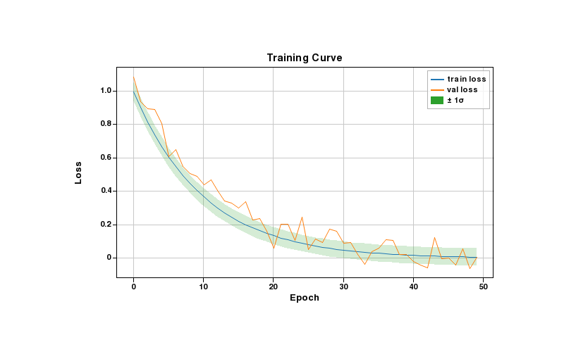
??? example "Code"
import plotlive.pyplot as plt
import numpy as np
np.random.seed(0)
x = np.arange(50)
plt.plot(x, np.exp(-x/10), label='train loss')
plt.plot(x, np.exp(-x/12) + 0.05*np.random.randn(50), label='val loss')
plt.fill_between(x, np.exp(-x/10)-0.05, np.exp(-x/10)+0.05, alpha=0.2, label='± 1σ')
plt.xlabel('Epoch'); plt.ylabel('Loss'); plt.title('Training Curve')
plt.legend(); plt.grid()
plt.show()
Confusion matrix
imshow with a Blues colormap. Scroll to zoom into individual cells, drag to pan.
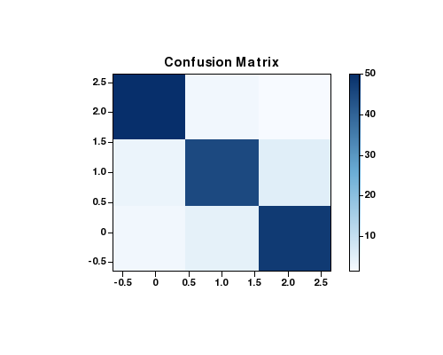
??? example "Code"
import plotlive.pyplot as plt
import numpy as np
cm = np.array([[50,2,1],[3,45,5],[2,4,48]])
fig, ax = plt.subplots(figsize=(5, 4))
im = ax.imshow(cm, cmap='Blues')
plt.colorbar(im, ax=ax)
ax.set_title('Confusion Matrix')
plt.show()
Feature importance
Horizontal bar chart with overlaid error bars showing ± standard deviation.
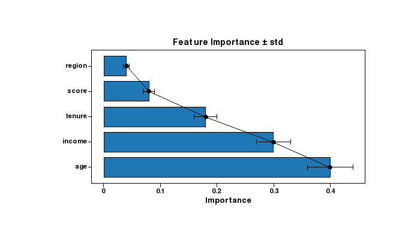
??? example "Code"
import plotlive.pyplot as plt
import numpy as np
feats = ['age', 'income', 'tenure', 'score', 'region']
vals = [0.40, 0.30, 0.18, 0.08, 0.04]
errs = [0.04, 0.03, 0.02, 0.01, 0.005]
plt.barh(feats, vals)
plt.errorbar(vals, range(len(feats)), xerr=errs, fmt='none', color='black', capsize=4)
plt.xlabel('Importance')
plt.title('Feature Importance ± std')
plt.show()
Distribution comparison
Box plot and violin plot side by side on the same data. Useful for comparing summary statistics vs. full distribution shape.
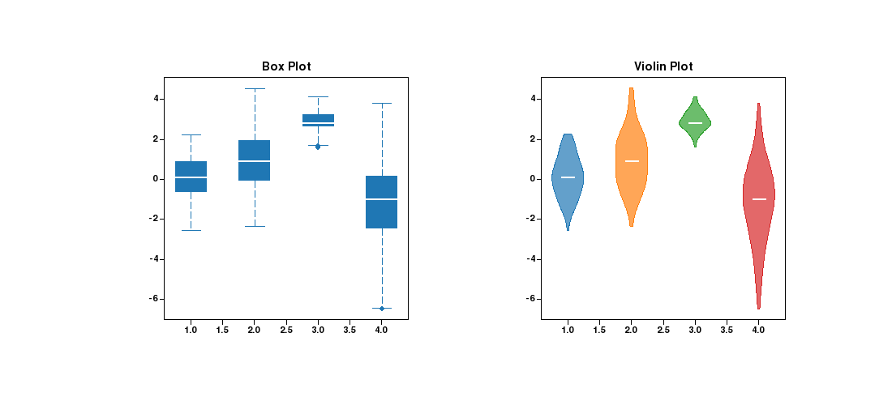
??? example "Code"
import plotlive.pyplot as plt
import numpy as np
np.random.seed(0)
data = [np.random.normal(m, s, 120) for m, s in [(0,1),(1,1.5),(3,0.5),(-1,2)]]
fig, (ax1, ax2) = plt.subplots(1, 2, figsize=(11, 5))
ax1.boxplot(data); ax1.set_title('Box Plot')
ax2.violinplot(data); ax2.set_title('Violin Plot')
plt.show()
Correlation heatmap
coolwarm colormap with symmetric range [-1, 1]. colorbar shows the scale.
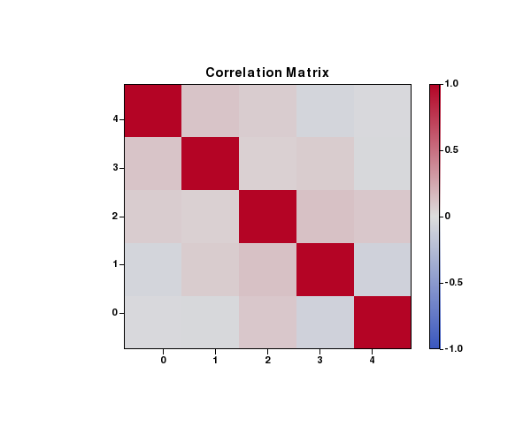
??? example "Code"
import plotlive.pyplot as plt
import numpy as np
np.random.seed(0)
corr = np.corrcoef(np.random.randn(5, 100))
fig, ax = plt.subplots(figsize=(6, 5))
im = ax.imshow(corr, cmap='coolwarm', vmin=-1, vmax=1)
plt.colorbar(im, ax=ax)
ax.set_title('Correlation Matrix')
plt.show()
Stacked area chart
Class proportions over time rendered with stackplot. Each layer is a separate class.
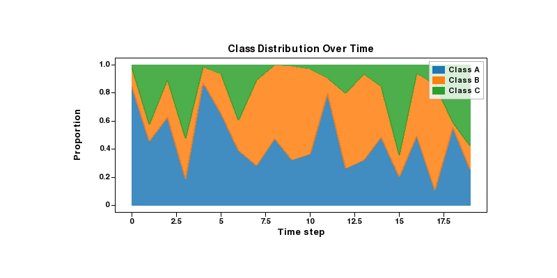
??? example "Code"
import plotlive.pyplot as plt
import numpy as np
np.random.seed(1)
x = np.arange(20)
a = np.random.dirichlet([3, 2, 1], 20).T
plt.stackplot(x, a[0], a[1], a[2],
labels=['Class A', 'Class B', 'Class C'], alpha=0.85)
plt.xlabel('Time step'); plt.ylabel('Proportion')
plt.title('Class Distribution Over Time')
plt.legend()
plt.show()
Pie chart
Sentiment class balance rendered as a pie chart.
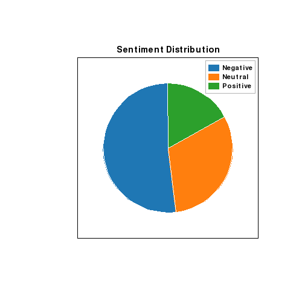
??? example "Code"
import plotlive.pyplot as plt
plt.pie([52, 31, 17], labels=['Negative', 'Neutral', 'Positive'], startangle=90)
plt.title('Sentiment Distribution')
plt.legend()
plt.show()
Animated examples
Press Space to play, ← / → to step one frame at a time, S to save the current frame.
Gradient descent
Point sliding down a quadratic bowl as the weight update shrinks the gradient each step.
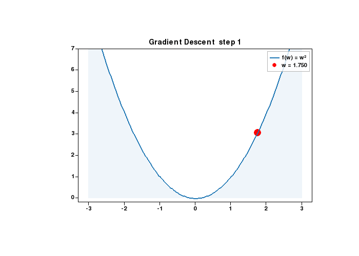
??? example "Code"
import plotlive.pyplot as plt
import numpy as np
x = np.linspace(-3, 3, 200)
w = [2.5]
def update(frame):
w[0] -= 0.15 * 2 * w[0]
plt.cla()
plt.plot(x, x**2, 'b-', linewidth=2, label='f(w) = w²')
plt.scatter([w[0]], [w[0]**2], c='red', s=120, zorder=5, label=f'w = {w[0]:.3f}')
plt.fill_between(x, 0, x**2, alpha=0.07)
plt.ylim(-0.2, 7); plt.legend()
plt.title(f'Gradient Descent step {frame + 1}')
plt.animate(update, frames=25, interval=200)
plt.show()
K-means clustering
Three clusters, centroids (red stars) repositioning each iteration as points are reassigned.
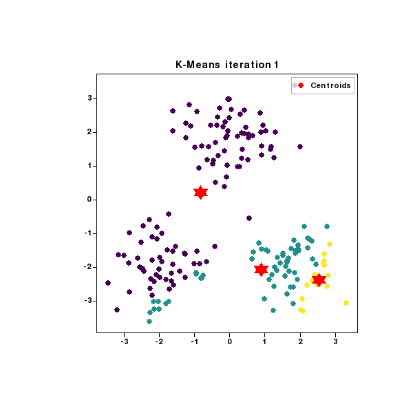
??? example "Code"
import plotlive.pyplot as plt
import numpy as np
np.random.seed(7); K = 3
data = np.vstack([np.random.randn(60,2)*0.7+c for c in [(-2,-2),(2,-2),(0,2)]])
centroids = data[np.random.choice(len(data), K, replace=False)].copy()
def update(frame):
global centroids
labels = np.array([[np.linalg.norm(p-c) for c in centroids]
for p in data]).argmin(1).astype(float)
centroids = np.array([data[labels==k].mean(0) if (labels==k).any()
else centroids[k] for k in range(K)])
plt.cla()
plt.scatter(data[:,0], data[:,1], c=labels, cmap='viridis', s=40, alpha=0.7)
plt.scatter(centroids[:,0], centroids[:,1], c='red', s=220,
marker='*', zorder=5, label='Centroids')
plt.legend(); plt.title(f'K-Means iteration {frame+1}')
plt.animate(update, frames=12, interval=500)
plt.show()
Softmax classifier
Three-class softmax trained with gradient descent. Decision boundaries rotate and converge as accuracy climbs.
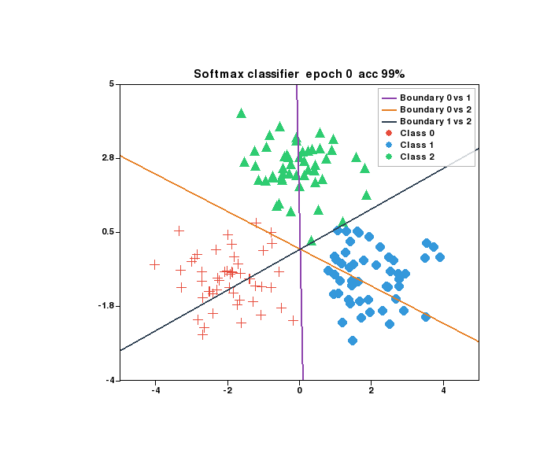
??? example "Code"
import plotlive.pyplot as plt
import numpy as np
np.random.seed(0); K = 3
centers = [(-2, -1), (2, -1), (0, 2.5)]
X = np.vstack([np.random.randn(50, 2) * 0.8 + c for c in centers])
y = np.repeat(np.arange(K), 50)
W = np.zeros((2, K)); b = np.zeros(K)
MARKERS = ['+', 'o', '^']
COLORS = ['#e74c3c', '#3498db', '#2ecc71']
BD_COLORS = ['#8e44ad', '#e67e22', '#2c3e50']
x_edge = np.array([-5.5, 5.5])
def softmax(z):
e = np.exp(z - z.max(axis=1, keepdims=True))
return e / e.sum(axis=1, keepdims=True)
def plot_boundary(i, j, color):
dw = W[:, i] - W[:, j]; db = b[i] - b[j]
if abs(dw[1]) < 1e-9: return
plt.plot(x_edge, -(dw[0]*x_edge + db)/dw[1],
color=color, linewidth=2, label=f'Boundary {i} vs {j}')
def update(frame):
global W, b
for _ in range(5):
p = softmax(X @ W + b); oh = np.eye(K)[y]
W -= 0.1 * (X.T @ (p - oh)) / len(X)
b -= 0.1 * (p - oh).mean(axis=0)
plt.cla()
for k in range(K):
m = y == k
plt.scatter(X[m,0], X[m,1], c=COLORS[k], marker=MARKERS[k], s=80, label=f'Class {k}')
for (i, j), col in zip([(0,1),(0,2),(1,2)], BD_COLORS):
plot_boundary(i, j, col)
acc = (np.argmax(X @ W + b, axis=1) == y).mean()
plt.xlim(-5, 5); plt.ylim(-4, 5); plt.legend()
plt.title(f'Softmax classifier epoch {frame * 5} acc {acc:.0%}')
plt.animate(update, frames=60, interval=100)
plt.show()
ReLU network hidden units
1-hidden-layer ReLU network on the two-moon dataset. Each subplot is one hidden unit: shaded region = where it fires, line = its decision boundary, w= = its output weight. Double-click any panel to focus.
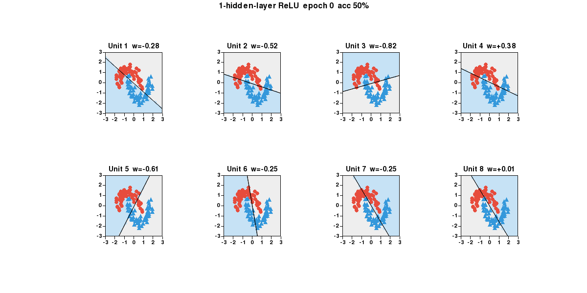
??? example "Code"
import plotlive.pyplot as plt
import numpy as np
np.random.seed(0); n_h = 8
theta = np.linspace(0, np.pi, 60)
X0 = np.c_[np.cos(theta), np.sin(theta) ] + np.random.randn(60,2)*0.15
X1 = np.c_[1-np.cos(theta), 0.5-np.sin(theta) ] + np.random.randn(60,2)*0.15
X = np.vstack([X0, X1]); X = (X - X.mean(0)) / X.std(0)
y = np.repeat([0, 1], 60)
W1 = np.random.randn(2, n_h) * np.sqrt(2/2); b1 = np.zeros(n_h)
W2 = np.random.randn(n_h, 1) * np.sqrt(2/n_h); b2 = np.zeros(1)
g = 28; gx, gy = np.linspace(-3,3,g), np.linspace(-3,3,g)
xx, yy = np.meshgrid(gx, gy); grid = np.c_[xx.ravel(), yy.ravel()]
x_edge = np.array([-3.5, 3.5])
COLORS = ['#e74c3c', '#3498db']; MARKERS = ['o', '^']
def relu(z): return np.maximum(0, z)
def sigmoid(z): return 1 / (1 + np.exp(-np.clip(z, -50, 50)))
def forward(Xb):
z1 = Xb @ W1 + b1
return sigmoid(relu(z1) @ W2 + b2).ravel(), z1
fig, axs = plt.subplots(2, 4, figsize=(14, 7))
def update(frame):
global W1, b1, W2, b2
for _ in range(10):
p, z1 = forward(X); a1 = relu(z1); N = len(X)
dz2 = (p - y).reshape(-1, 1) / N
W2 -= 0.05 * a1.T @ dz2; b2 -= 0.05 * dz2.sum(0)
dz1 = (dz2 @ W2.T) * (z1 > 0)
W1 -= 0.05 * X.T @ dz1; b1 -= 0.05 * dz1.sum(0)
p_tr, _ = forward(X); acc = ((p_tr > 0.5).astype(int) == y).mean()
_, z1_g = forward(grid)
for i, ax in enumerate(axs.flat):
ax.cla()
active = z1_g[:, i] > 0
ax.scatter(grid[~active, 0], grid[~active, 1], c='#eeeeee', s=40)
ax.scatter(grid[ active, 0], grid[ active, 1], c='#c6e2f5', s=40)
w, b = W1[:, i], b1[i]
if abs(w[1]) > 1e-9:
ax.plot(x_edge, -(w[0]*x_edge + b)/w[1], 'k-', linewidth=1.5)
for k in range(2):
m = y == k
ax.scatter(X[m,0], X[m,1], c=COLORS[k], marker=MARKERS[k],
s=45, edgecolors='k', linewidths=0.5)
ax.set_xlim(-3, 3); ax.set_ylim(-3, 3)
ax.set_title(f'Unit {i+1} w={W2[i,0]:+.2f}')
plt.suptitle(f'1-hidden-layer ReLU epoch {frame*10} acc {acc:.0%}')
plt.animate(update, frames=100, interval=100)
plt.show()
Training curves (animated)
Loss and accuracy plotted in real time as the training loop runs. Two subplots update each frame.
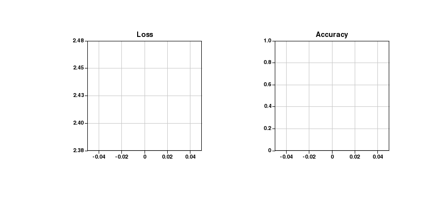
??? example "Code"
import plotlive.pyplot as plt
import numpy as np
np.random.seed(1); losses, accs = [], []
plt.subplots(1, 2, figsize=(10, 4))
def update(frame):
t = frame / 80
losses.append(2.3*np.exp(-3*t) + 0.08 + 0.03*np.random.randn())
accs.append(min(0.99, 1 - np.exp(-4*t)*0.9 + 0.01*np.random.randn()))
ax0, ax1 = plt.gcf().axes
ax0.cla(); ax1.cla()
ax0.plot(losses, 'b-', linewidth=2); ax0.set_title('Loss'); ax0.grid()
ax1.plot(accs, 'g-', linewidth=2); ax1.set_title('Accuracy')
ax1.set_ylim(0, 1); ax1.grid()
plt.animate(update, frames=80, interval=80)
plt.show()
Confidence bands widening
fill_between layers at ±1σ and ±2σ. Bands widen each frame to show how uncertainty grows under distribution shift.
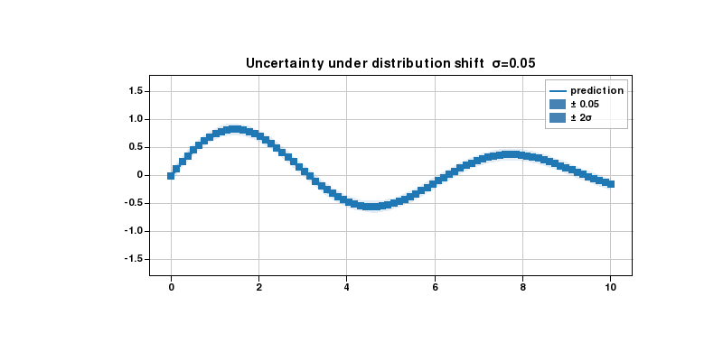
??? example "Code"
import plotlive.pyplot as plt
import numpy as np
np.random.seed(0)
x = np.linspace(0, 10, 80)
mean = np.sin(x) * np.exp(-x/8)
noise_levels = np.linspace(0.05, 0.6, 30)
def update(frame):
sigma = noise_levels[frame]
plt.cla()
plt.plot(x, mean, 'steelblue', linewidth=2, label='prediction')
plt.fill_between(x, mean - sigma, mean + sigma, alpha=0.35,
color='steelblue', label=f'± {sigma:.2f}')
plt.fill_between(x, mean - 2*sigma, mean + 2*sigma, alpha=0.15,
color='steelblue', label='± 2σ')
plt.ylim(-1.8, 1.8); plt.legend(); plt.grid()
plt.title(f'Uncertainty under distribution shift σ={sigma:.2f}')
plt.animate(update, frames=30, interval=150)
plt.show()
Learning curve
Error bars shrink as more training data is added. Points appear one by one each frame.
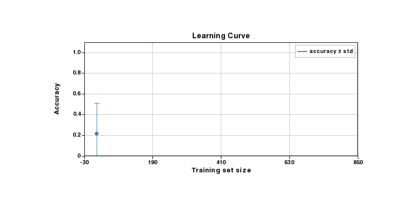
??? example "Code"
import plotlive.pyplot as plt
import numpy as np
np.random.seed(0)
sizes = np.array([10, 25, 50, 100, 200, 400, 800])
means = 1 - 0.88*np.exp(-sizes/120) + 0.015*np.random.randn(len(sizes))
stds = 0.32*np.exp(-sizes/80) + 0.01
def update(frame):
n = frame + 1
plt.cla()
plt.errorbar(sizes[:n], means[:n], yerr=stds[:n],
fmt='o-', capsize=5, color='steelblue', label='accuracy ± std')
plt.xlim(-30, 850); plt.ylim(0, 1.1)
plt.xlabel('Training set size'); plt.ylabel('Accuracy')
plt.title('Learning Curve'); plt.legend(); plt.grid()
plt.animate(update, frames=len(sizes), interval=600)
plt.show()
Prediction distribution per epoch
Box plots reveal how the predicted probability distribution tightens as training progresses.
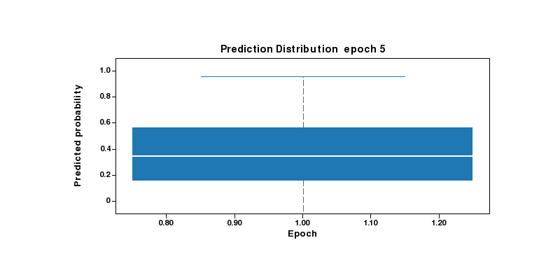
??? example "Code"
import plotlive.pyplot as plt
import numpy as np
np.random.seed(1)
epochs = [5, 10, 20, 40, 80, 160]
data = [np.random.normal(0.35 + 0.55*(i/len(epochs)),
max(0.28 - i*0.04, 0.04), 80)
for i in range(len(epochs))]
def update(frame):
n = frame + 1
plt.cla()
plt.boxplot(data[:n], labels=[str(e) for e in epochs[:n]])
plt.ylim(-0.1, 1.1)
plt.xlabel('Epoch'); plt.ylabel('Predicted probability')
plt.title(f'Prediction Distribution epoch {epochs[frame]}')
plt.animate(update, frames=len(epochs), interval=700)
plt.show()
Activation distribution per training step
Violin plots show how hidden-layer activations concentrate as the network learns.
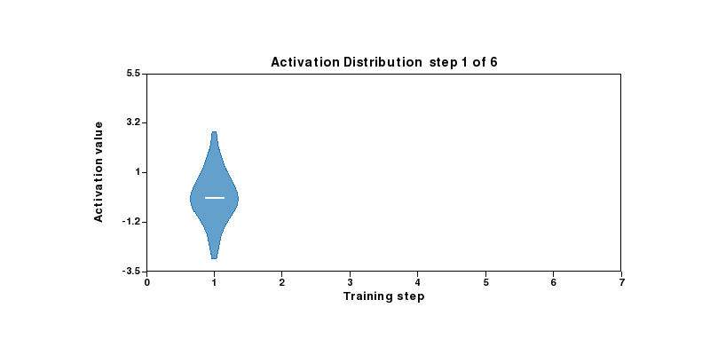
??? example "Code"
import plotlive.pyplot as plt
import numpy as np
np.random.seed(2)
steps = 6
data = [np.random.normal(i*0.5, max(1.1 - i*0.16, 0.15), 120)
for i in range(steps)]
def update(frame):
n = frame + 1
plt.cla()
plt.violinplot(data[:n], positions=list(range(1, n+1)), widths=0.7)
plt.xlim(0, steps+1); plt.ylim(-3.5, 5.5)
plt.xlabel('Training step'); plt.ylabel('Activation value')
plt.title(f'Activation Distribution step {frame+1} of {steps}')
plt.animate(update, frames=steps, interval=700)
plt.show()
Class rebalancing
Pie chart evolving from an imbalanced dataset toward a uniform class distribution.
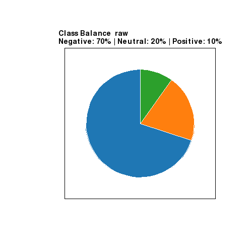
??? example "Code"
import plotlive.pyplot as plt
labels = ['Negative', 'Neutral', 'Positive']
stages = [[70,20,10],[60,25,15],[50,30,20],[45,32,23],[40,35,25],[33,34,33]]
captions = ['raw','oversample pos','oversample more','near balance','balanced','uniform']
def update(frame):
plt.cla()
vals = stages[frame]
plt.pie(vals, labels=labels, startangle=90)
pcts = ' | '.join(f'{l}: {v}%' for l, v in zip(labels, vals))
plt.title(f'Class Balance {captions[frame]}\n{pcts}')
plt.animate(update, frames=len(stages), interval=900)
plt.show()
Model complexity
stackplot grows one component per frame, showing how each feature family contributes to explained variance.
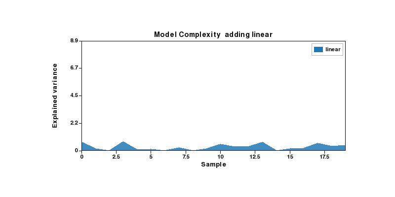
??? example "Code"
import plotlive.pyplot as plt
import numpy as np
np.random.seed(3)
x = np.arange(20)
feats = ['linear', 'interactions', 'polynomials', 'residuals']
components = [np.abs(np.random.randn(20)) * (i+1) * 0.4 for i in range(len(feats))]
def update(frame):
n = frame + 1
plt.cla()
plt.stackplot(x, *components[:n], labels=feats[:n], alpha=0.85)
plt.xlim(0, 19); plt.ylim(0, sum(c.max() for c in components) * 1.05)
plt.xlabel('Sample'); plt.ylabel('Explained variance')
plt.title(f'Model Complexity adding {feats[frame]}')
plt.legend()
plt.animate(update, frames=len(feats), interval=900)
plt.show()